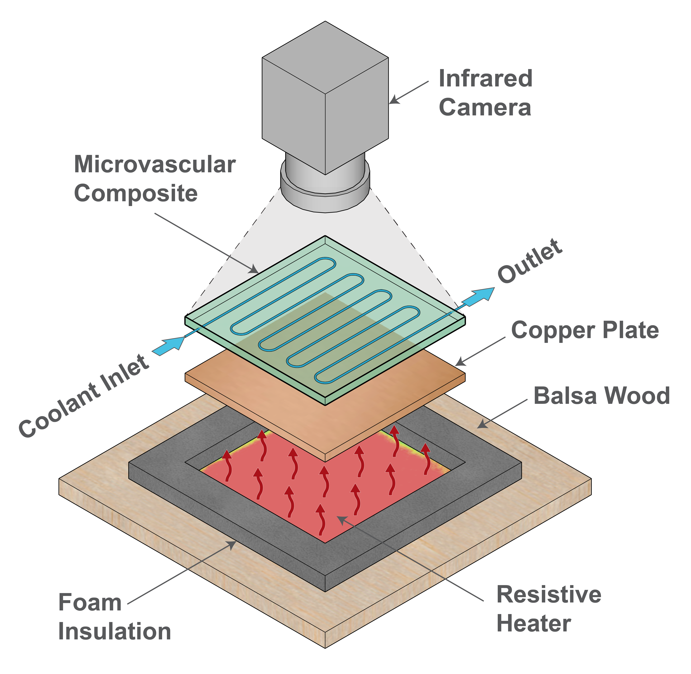
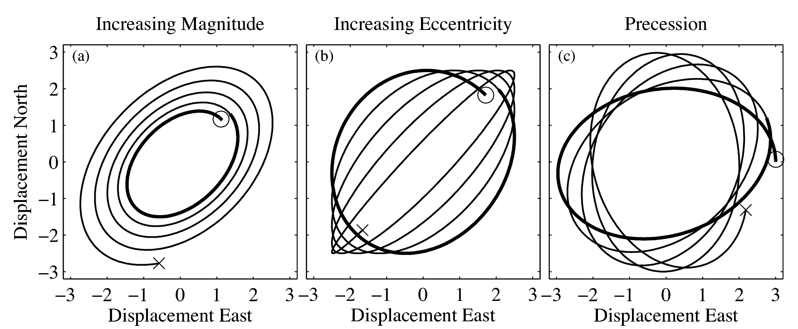

class: center, middle <br/><br/><br/> .title[Vascular-based Thermal Regulation] Theory, modeling, experiments, and applications <br/><br/> .author[Kalyana B. Nakshatrala] .coauthor[] <br/> .institution[Civil and Environmental Engineering<br/> Mechanical Engineering (courtesy)<br/> University of Houston] <br/><br/> .date[March 17, 2023] <br/> <br/> --- class: left ## Talk's Outline 1. Motivation 2. Reduced-order modeling 3. Flow reversal 4. Countercurrent heat exchange 5. Sensitivity analysis 6. Material design 7. Conclusions --- class: center, middle ## Motivation --- class: center middle ## Reduced-Order Modeling --- class: center ## Governing Equations $\frac{\partial \vartheta}{\partial t}$ <div>$$\frac{\partial \vartheta}{\partial t}$$</div> --- class: center, middle ## Mathematical Analysis ```{theorem} Here is my theorem. ``` --- class: center, middle ## Mathematical-driven Material Design --- class: center, middle ## Configuration-indepedent invariants under flow reversal <!-------------------------> <!---Problem description---> <!-------------------------> --- class: center ## Problem Description <img style="width:65%;margin-top:0.5em;margin-bottom:-0.5em" src="./figures/PNAS_Figures/Fig1_Description.pdf"> <!--Problem.--> Active cooling in a thin domain embedded with a vasculature. <!---------------------------------> <!---Invariants Under Convection---> <!---------------------------------> --- class: center ## Invariants Under Convection <video preload="auto" width="80%" height="auto" data-setup="{}" autoplay loop controls><source src="./videos/Video_1_Flow_reversal_CONVECTION.mov" type="video/mp4" /></video> MST and outlet temperature are invariants under flow reversal. <!------------------------------------> <!---Under Radiation and Convection---> <!------------------------------------> --- class: center ## Under Radiation and Convection <video preload="auto" width="80%" height="auto" data-setup="{}" autoplay loop controls><source src="./videos/Video_2_Flow_reversal_Leaf.mov" type="video/mp4" /></video> MST and outlet temperature do not alter under flow reversal. <!------------------------> <!---Experimental Setup---> <!------------------------> --- class: center ## Experimental Setup  <!-----------------------------> <!---Experimental Validation---> <!-----------------------------> --- class: center ## Experimental Validation <br><br> <img style="width:100%;margin-top:0.5em;margin-bottom:-0.5em" src="./figures/PNAS_Figures/Fig5_Exp_Sim_validation.pdf"> High resolution Gulf currents from drifters — details [{here}](http://www.jmlilly.net/papers/lilly20-sccoas.pdf) --- class: left ##Conclusions 1. Intense cyclones with $Ro\_\star>1/6$ throughout the Gulf, with no analogue on the anticyclonic side 2. Strong $10<R\_\star<50$ km cyclones in the east are Loop Current Frontal Eddies (LCFE's), e.g. Le Hénaff et al. (2014) 3. Strong $10<R\_\star<50$ km cyclones in the west appear to be LCFE's that have propagated across the basin 5. Highly nonlinear, very small $R\_\star<10$ cyclones appear to reflect an active, rapidly advected submesoscale 6. Above $R\_\star>50$, anticyclonic Loop Current Eddies dominate --- class: center, middle ## Sensitivity Analysis ## <span style="color:blue">Sensitivity Analysis</span> --- class: center, middle # Thank you! This talk is available at [http://www.jmlilly.net/talks.html](http://www.jmlilly.net/talks.html) <br><br> <b>Acknowledgment</b><br><br> “All truths are easy to understand once they are discovered; the point is to discover them.” — Galileo Galilei --- class: left ##A Model for Lagrangian Trajectories <!--<img style="width:100%;margin-top:-0.2em;margin-bottom:-0.2em" src="./figures/nonlineareddyallridges.png">--> A model for Lagrangian trajectories $z(t)=x(t) + \mathrm{i} y(t)$ with eddies: <div>$$z(t)=x(t) + \mathrm{i} y(t) =z_\epsilon(t) + \boxed{z_\star(t)}.$$</div> Turbulent background $z\_\epsilon(t)$ (stochastic) plus $z\_\star(t)$ (oscillatory). The oscillatory signal $z\_\star(t)$ is modeled as a *modulated ellipse*: <div>$$z\_\star(t)=\mathrm{e}^{\mathrm{i}\theta(t)}\left[a(t)\cos \phi(t)+\mathrm{i}b(t)\sin \phi(t)\right].$$</div>  --- class: left ##Lagrangian Estimation of Eddy Properties This problem has five parts. 2. From $\widehat{z}\_\star(t)$, estimate $a(t)$, $b(t)$, $\theta(t)$, and $\phi(t)$ that generated it. 2. Address errors in $\widehat{z}\_\star(t)$ due to modulation, a.k.a. bias error. 1. Address “false positives” due to inertial oscillations. 3. Address “false positives” of $\widehat{z}\_\star(t)$ due to the background $z_\epsilon(t)$. 1. Estimated the eddy signal $\widehat{z}\_\star(t)$ given a noisy time series $z(t)$. Solutions: 1. The analytic signal of .cite[Gabor (1946)], see .cite[Lilly and Olhede (2009)]. 2. The internal bias estimate of .cite[Lilly and Olhede (2012)]. 1. Easy; specify $\omega/f>-1/2$, as shown shortly. 3. A significance test based on a stochastic model, introduced here. 4. Multivariate wavelet ridge analysis of .cite[Lilly and Olhede (2012)]. --- class: left ## Inferring Ellipse Properties <div>$$z\_\star(t)=\mathrm{e}^{\mathrm{i}\theta(t)}\left[a(t)\cos \phi(t)+\mathrm{i}b(t)\sin \phi(t)\right]$$</div> Given $z\_\star(t)$, we wish to infer $a(t)$, $b(t)$, $\theta(t)$, and $\phi(t)$. This is a generalization of, given $x\_\star(t)=a(t)\cos \phi(t)$, infer $a(t)$ and $\phi(t)$, solved in a landmark paper by .cite[Gabor (1946)]. The solution is to form the analytic signal $x\_\star^+(t)$, by zeroing negative frequencies and doubling positive frequencies. Then $x\_\star(t)=\Re \left\\\{x\_\star^+(t)\right\\\}$, and $\widehat{a}(t)\mathrm{e}^{\mathrm{i}\widehat{\phi}(t)}\equiv x\_\star^+(t)$ gives sensible estimates. Generalizing to two variables, we form $\mathbf{z}(t)=[x(t)\,\,y(t)]^T$ and take its analytic part $\mathbf{z}_+(t)$ .cite[(Lilly and Olhede, 2009)]. This defines $\widehat{a}(t)$, $\widehat{b}(t)$, $\widehat{\theta}(t)$, and $\widehat{\phi}(t)$ which are again the only sensible estimates. --- class: left ## A Bias Estimate The leading-order term in the bias error is .cite[(Lilly and Olhede, 2012)] <div>$$\frac{\|\widehat{\mathbf{z}}_+(t)-\mathbf{z}_+(t)\|}{\left\|\mathbf{z}_+(t)\right\|} \approx \varsigma(t)\equiv \frac{1}{2} \frac{P}{\omega^2(t)} \frac{\left\|\mathbf{c}(t)\right\|}{\left\|\mathbf{z}_+(t)\right\|}$$</div> where $\mathbf{z}(t)=[x(t)\,\,\,y(t)]^T$, $\mathbf{z}_+(t)$ is its analytic part, and the parameter $P$ controls the wavelet time/frequency tradeoff. <br><br> The second-order departure of $\mathbf{z}_+(t)$ from a local oscillation at the frequency $\omega(t)$ is described by <div>$$ \mathbf{c}(t) = \frac{\mathrm{d}^2}{\mathrm{d}t^2}\,\mathbf{z}_+(t)-\mathrm{i}2\omega(t) \frac{\mathrm{d}}{\mathrm{d}t}\,\mathbf{z}_+(t)-\omega^2(t)\mathbf{z}_+(t) $$</div> where the <b>joint instantaneous frequency</b> is the natural measure of time-varying frequency in the bivariate case .cite[(Lilly and Olhede, 2009)] <div>$$\omega(t)\equiv\frac{\Im\left\{\mathbf{z}_+^H(t)\frac{\mathrm{d}}{\mathrm{d}t}\mathbf{z}_+(t)\right\}}{\|\mathbf{z}_+(t)\|^ 2}.$$</div> <div>$$d \, \rho \, c_p \, \frac{\partial \vartheta}{\partial t} + \mathrm{div}[\mathbf{q}] = f(\mathbf{x}) - h_T \, (\vartheta - \vartheta_{\mathrm{amb}}) - \epsilon \, \sigma \, (\vartheta^{4} - \vartheta_{\mathrm{amb}}^4)$$</div> See the [{2018 Ocean Sciences talk}](http://www.jmlilly.net/talks/lilly18-os.html) for more details.